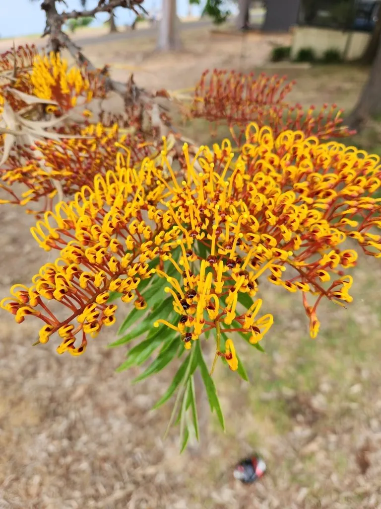

乔木 · 植物界
银桦 Grevillea robusta

山龙眼科银桦属常绿乔木，羽状深裂的叶片背面密被银白色绢毛，盛花时满树橙黄，是南方常见的行道树。
- 分类
- 门被子植物门纲木兰纲目山龙眼目科山龙眼科属银桦属
- 栖息环境
- 热带亚热带低山丘陵，喜光喜湿、不耐寒，适宜酸性土
- 地理分布
- 原产澳大利亚东部；中国广东、广西、福建、云南、台湾引种栽培
- 保护级别
- 暂无评估；中国未列入国家重点保护野生植物名录
物种志
银桦为山龙眼科银桦属常绿乔木，高二十至四十米，树皮灰褐色、粗糙纵裂，树冠圆锥形。叶片羽状深裂，裂片狭长，表面深绿色，背面密被银白色绢毛，随风翻动时银光闪闪。花橙黄色，花被片向外卷曲，组成总状花序，形似牙刷，花期五月；蓇葖果木质，成熟时开裂，种子具翅，果期八至十月。
银桦原产澳大利亚东部，中国广东、广西、福建、云南、台湾等地有引种，多作行道树和庭园树栽培。它喜光和温暖湿润的气候，不耐寒，适宜深厚肥沃、排水良好的酸性土壤，根系发达。树形高大通直、叶背银白，是优良的行道树和风景树；木材淡红色、纹理直，可制家具和胶合板；花富含花蜜，是优良的蜜源植物。银桦在华南城市绿化中应用广泛。
形态与习性
- 株高20–40 m，树冠圆锥形
- 花期5 月，总状花序橙黄色
- 果期8–10 月，蓇葖果木质
- 光照喜光，幼树可稍耐阴
- 水分喜湿润，忌长期干旱
- 土壤深厚肥沃的酸性土
- 主要用途行道树、蜜源，木材制家具
趣味知识
- 银桦叶片背面密生银白色绢毛，风吹叶翻时整棵树银光闪烁，故名银桦。
- 它的花序呈单侧排列，形似一把橙黄色的牙刷。
- 银桦原产澳大利亚，是当地蜜雀和蜜蜂的重要蜜源植物。